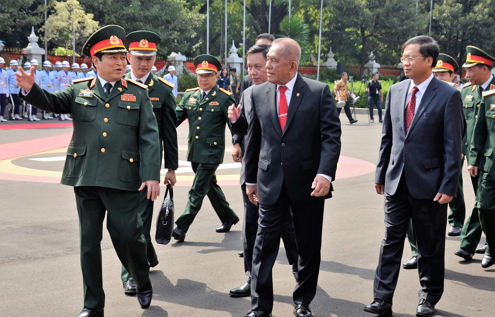
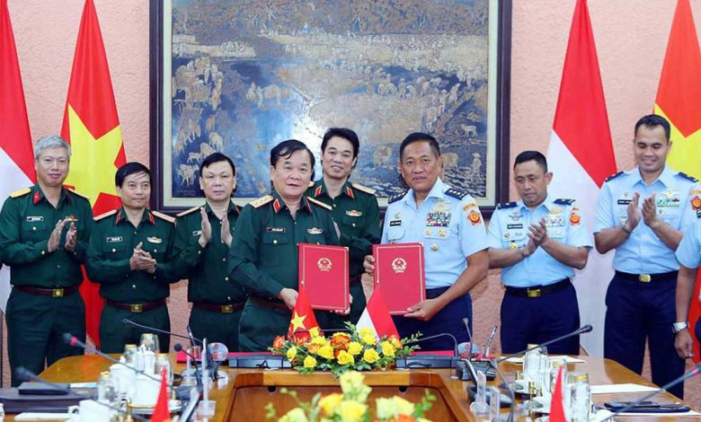

KERJASAMA INTERNASIONAL: INDONESIA X VIETNAM
💣📰Bidang Pertahanan & Keamanan📌🛡️
- Indonesia dan Vietnam juga menjalin kerjasama yang baik dalam bidang pertahanan dan keamanan. Salah satu cara mereka bekerja sama adalah melalui kunjungan militer dan latihan bersama. Dengan melakukan latihan ini, tentara dari kedua negara dapat belajar satu sama lain dan meningkatkan kemampuan mereka dalam menjaga keamanan, terutama di wilayah laut. Kerjasama ini penting karena Indonesia dan Vietnam sama-sama memiliki perairan yang luas dan berharga, sehingga perlu dijaga dengan baik.
- Kedua negara telah menandatangani sebuah kesepakatan yang disebut Memorandum of Understanding (MoU) dalam bidang keamanan maritim. Kesepakatan ini bertujuan untuk mencegah berbagai aktivitas ilegal yang bisa merugikan, seperti penangkapan ikan ilegal, penyelundupan barang, dan pencurian sumber daya laut. Dengan adanya MoU ini, Indonesia dan Vietnam berkomitmen untuk bekerja sama dalam mengawasi perairan mereka dan memastikan bahwa kegiatan yang dilakukan di laut berlangsung dengan aman dan sesuai aturan.
- Kerjasama dalam bidang pertahanan dan keamanan ini membantu kedua negara untuk saling mendukung dalam menghadapi berbagai tantangan di lautan. Selain menjaga keamanan maritim, kolaborasi ini juga memperkuat hubungan diplomatik antara Indonesia dan Vietnam. Dengan bekerja sama, mereka dapat menciptakan lingkungan yang lebih aman dan nyaman bagi masyarakat di kedua negara. Hal ini penting agar semua orang dapat menikmati sumber daya laut secara berkelanjutan dan hidup dalam kedamaian.
 